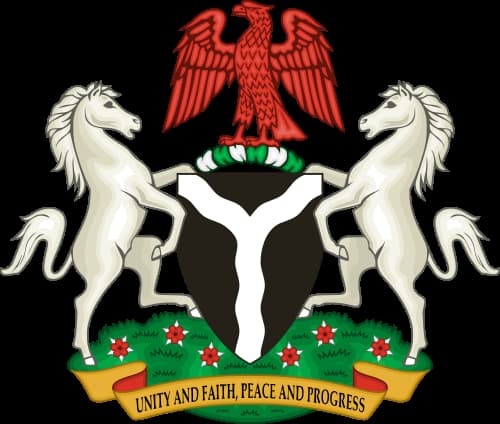

Nigeria

Nigeria,[b] officially the Federal Republic of Nigeria, is a country in West Africa between the Sahel to the north and the Gulf of Guinea in the Atlantic Ocean to the south. It covers an area of 923,769 square kilometres (356,669 mi2). With a population of more than 242 million, it is the most populous country in Africa, and the world's sixth-most populous country. Nigeria borders Niger in the north, Chad in the northeast, Cameroon in the east, and Benin in the west. Nigeria is a federal republic comprising 36 states and the Federal Capital Territory, where its capital, Abuja, is located. The largest city in Nigeria by population is Lagos, one of the largest metropolitan areas in the world and the second largest in Africa.